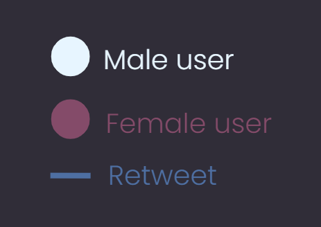

Maximizing Influence
and Fairness in
Social Networks
In 2009, Sina Weibo
- a Twitter-like platform in China -
had:
~1.7 million users
~300 thousand original posts
~24 million retweets*

Maximizing Influence
and Fairness in
Social Networks
Maximizing Influence
and Fairness in
Social Networks